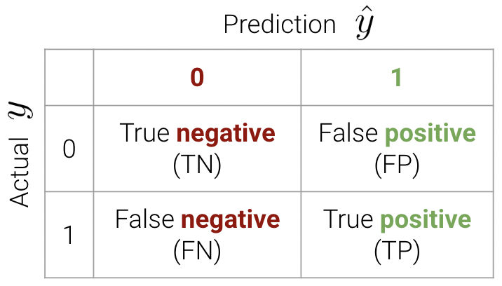
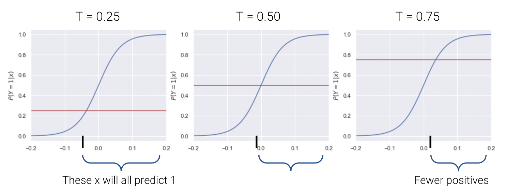
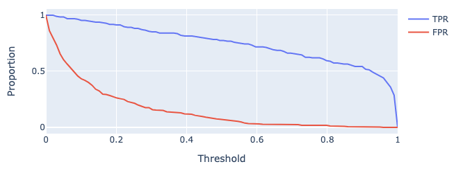
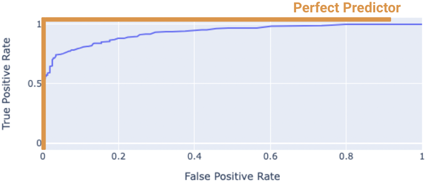
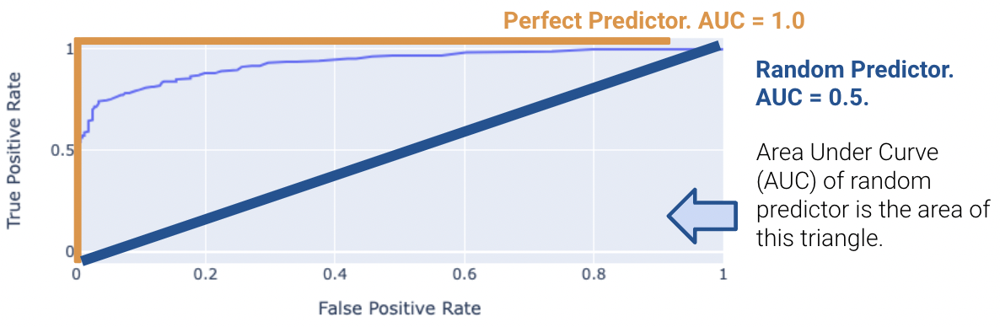
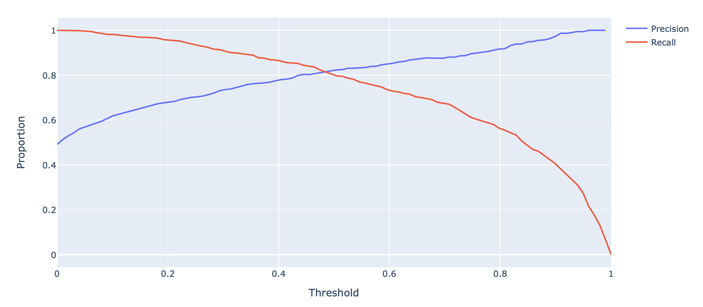

Code
import pandas as pd
import numpy as np
import seaborn as sns
import matplotlib.pyplot as plt
games = pd.read_csv("data/games")In the previous lecture, we made our way through the beginnings of the classification process. We reframed our understanding of the modeling process in terms of predicted probabilities. We then derived the logistic regression model to predict the probability of a datapoint belonging to Class 1, given inputted features.
In today’s lecture, we’ll address the second phase of a classification task: applying a decision rule to interpret these predicted probabilities and classify a datapoint. We’ll also explore metrics to assess the performance of our classifiers on real-world data.

To classify a datapoint as Class 1 or Class 0, we need to interpret the predicted probability outputted by our logistic regression model. We’ll do so by applying a decision rule: a rule that tells us, given a predicted probability \(p\), if we should predict \(\hat{Y}=1\) or \(\hat{Y}=0\).
Decision rules are commonly implemented by defining a threshold. If the predicted probability is equal to or greater than the threshold value \(T\), we classify the datapoint into Class 1. Otherwise, we classify the datapoint into Class 0.
\[\hat{Y} = \text{classify}(x) = \begin{cases} \text{Class 1} & p \geq T \\ \text{Class 0} & p < T \end{cases}\]
The threshold \(T\) is often 0.5, but not always. We’ll explore why we may apply different threshold values later this lecture.
Let’s try applying a threshold of \(T=0.5\) to a logistic regression model fitted to our games data. As before, we will attempt to predict the outcome of a game (win or lose) given the "GOAL_DIFF" between teams.
import pandas as pd
import numpy as np
import seaborn as sns
import matplotlib.pyplot as plt
games = pd.read_csv("data/games")X = games[["GOAL_DIFF"]]
Y = games["WON"]We can create a logistic regression model in sklearn using the LogisticRegression class. It works very similarly to LinearRegression: we will initialize a model object, fit it, then use it to make predictions. Because we want to determine the probabilities predicted by our model, we will use the .predict_proba() method.
import sklearn.linear_model as lm
# Initialize a LogisticRegression object
model = lm.LogisticRegression()
# Fit the model to the data
model.fit(X, Y)
# Predict probabilities. We display only the first 5 rows for clarity
model.predict_proba(X)[:5, :]array([[0.9521269 , 0.0478731 ],
[0.94399293, 0.05600707],
[0.94208808, 0.05791192],
[0.94208808, 0.05791192],
[0.93384531, 0.06615469]])What’s going on here – why did we output a 2D array? By default, .predict_proba() will produce the predicted probability of a datapoint belonging to Class 0 as well as the probability of it belonging to Class 1. Notice that each row in the output above sums to 1.
To check which column represents which probability, we can call the .classes_ attribute. The output below tells us that the first column of .predict_proba() represents the probability of belonging to Class 0, while the second column is the probability of belonging to Class 1.
model.classes_array([0, 1])Let’s grab just the predicted probabilities of each datapoint belonging to Class 1: \(p=P(Y=1|x)\).
p = model.predict_proba(X)[:, 1]To categorize our datapoints into classes, we need to apply our decision rule. Recall that we are using a threshold of \(T=0.5\): this means that if the predicted probability for a datapoint is equal to or greater than \(0.5\), we’ll classify that point into Class 1.
# .astype(int) converts True and False to 1 and 0
(p >= 0.5).astype(int)array([0, 0, 0, ..., 1, 1, 1])Alternatively, the .predict() method of LogisticRegression will automatically apply a \(T=0.5\) threshold for us.
classes = model.predict(X)
games["Predicted Class"] = classes
# Visualize our results
def sigmoid(z):
return 1/(1+np.exp(-z))
x = np.linspace(-0.3, 0.3)
sns.stripplot(data=games, x="GOAL_DIFF", y="WON", hue="Predicted Class", orient="h")
plt.plot(x, sigmoid(model.intercept_ + model.coef_[0]*x), "k", label="P(Y=1|x)")
plt.gca().invert_yaxis();
In the cell above, we color each datapoint according to the class predicted by our model. We have also superimposed the fitted logistic regression curve.
Let’s break down what’s going on here. We said that any datapoint with a predicted probability equal to or greater than \(0.5\) should be categorized into Class 1. Equivalently, we can express this by saying:
"GOAL_DIFF", that leads to a predicted probability of exactly 0.5
Because we are now looking at the features of a datapoint when deciding which class to predict, it makes more sense to display only this input data. We do so by using a rugplot, which visualizes scatter points when we only have one variable.
# Determine the decision boundary
theta0 = model.intercept_
theta1 = model.coef_[0]
T = 0.5
db = (1/theta1)*(-np.log(1/T - 1) - theta0)
# Visualize the classified data
sns.rugplot(data=games, x="GOAL_DIFF", hue="Predicted Class")
plt.scatter(x=[db], y=[0.005], c="k", s=100)
plt.ylim(0, 0.1)
plt.yticks([], []);
We have just uncovered our first example of a decision boundary. A decision boundary is a “line” that splits the data into classes based on its features. In the example above, the point marked in black is our decision boundary: we classify all datapoints to the right of the decision boundary as being Class 1, and all points to the left as being Class 0.
Why did we place “line” in quotes earlier? More formally, a decision boundary is a hyperplane: a linear combination of our model’s \(p\) features, expressed in \(p\) dimensions. In the example above, we had a model with one feature, so our decision boundary is a 1-dimensional point. If we had two features, our decision boundary would be a 2-dimensional line. Similarly, for a model with \(p\) features, our decision boundary is a hyperplane in \(p\) dimensions.
Let’s consider the decision boundary of a model with an intercept term and two features – "GOAL_DIFF" and "AST", which stands for the number of assists in a basketball game. Our logistic regression model for the probability of a team winning looks like:
\[p=\frac{1}{1+e^{-(\theta_0+\theta_1\text{GOAL\_DIFF}+\theta_2\text{AST})}}\]
The decision boundary represents all combinations of feature values that result in a predicted probability exactly equal to our threshold, \(T\). We can use this fact to derive the equation of our decision boundary hyperplane.
\[T=\frac{1}{1+e^{-(\theta_0+\theta_1\text{GOAL\_DIFF}+\theta_2\text{AST})}}\] \[\theta_0+\theta_1\text{GOAL\_DIFF}+\theta_2\text{AST} = -\log{(\frac{1}{T}-1)}\]
In the cell below, we plot the classifications made by our decision rule when \(T=0.5\). Notice that we are visualizing the decision boundary in terms of the features – we do not express boundaries in terms of \(Y\)!
X_two_feature = games[["GOAL_DIFF", "AST"]]
Y = games["WON"]
two_feature_model = lm.LogisticRegression()
two_feature_model.fit(X_two_feature, Y)
# This function plots the decision boundary such that AST is a function of GOAL_DIFF
theta0 = two_feature_model.intercept_
theta1, theta2 = two_feature_model.coef_[0]
T = 0.5
db = lambda goal_diff: (1/theta2)*(-np.log(1/T - 1) - theta1*goal_diff - theta0)
games["Predicted Class Two Features"] = two_feature_model.predict(X_two_feature)
sns.scatterplot(data=games, x="GOAL_DIFF", y="AST", hue="Predicted Class Two Features")
plt.plot(x, db(x), "k");
Let’s see how well our decision boundary separates the data into classes. In the cell below, we overlay the decision boundary on top of the true classes of the dataset.
sns.scatterplot(data=games, x="GOAL_DIFF", y="AST", hue="WON")
plt.plot(x, db(x), "k");
It turns out that our decision boundary doesn’t always get things “right.” Far away from the decision boundary, we see that most points are classified correctly. Closer to the hyperplane, however, there is a “muddled” region where some points with \(Y=1\) sit to the left of the boundary, and some points with \(Y=0\) sit to the right of the boundary.
This begs the question: in what situations can our classifier behave perfectly? That is, what does our data have to look like for us to be able to create a classifier that perfectly classifies all datapoints into the correct class?
A dataset is said to be linearly separable if there exists a hyperplane among the input features \(x\) that perfectly separates the two classes \(Y\). Put more practically: we say that a dataset is linearly separable if we can draw a straight line, in terms of the features, that splits the two classes.

When a dataset is linearly separable, we can create a classifier that perfectly separates the datapoints into classes.
If our classifier makes perfect classifications, does it also achieve 0 cross-entropy loss? To answer this question, consider the conditions under which cross-entropy loss approaches 0.
\[\text{Cross-Entropy Loss} = -\left(y\log{(p)}-(1-y)\log{(1-p)}\right)\]
For a single datapoint, cross-entropy loss is 0 if \(y=p\). That is:
When can our logistic regression model output predicted probabilities of exactly 0 or 1?
\[p=P(Y=1|x)=\frac{1}{1+e^{-x^{\top} \theta}}\]
When \(\theta \rightarrow \infty\), \(p \rightarrow 1\). Likewise, when \(\theta \rightarrow -\infty\), \(p \rightarrow 0\). Take a moment to examine the logistic regression model and convince yourself of these facts.
When our data is linearly separable, we run into the problem of diverging model parameters: the “optimal” parameters for the model approach positive or negative infinity. This can be a problem for a few reasons (beyond the fact that we can’t practically “plug” \(\infty\) into our model to make predictions).
Consider an artificially-generated “toy” dataset of two datapoints.
#\code-fold: true
toy_df = pd.DataFrame({"x": [-1, 1], "y": [0, 1]})
sns.scatterplot(data=toy_df, x='x', y='y', hue="y", s=100, legend=None);
If we fit a logistic regression model with one feature to this data, we find a strange-looking cross-entropy loss surface.
#\code-fold: true
def toy_model(theta1, x):
return 1/(1 + np.exp(-theta1 * x))
def mean_cross_entropy_loss_toy(theta1):
# Here we use 1 - sigma(z) = sigma(-z) to improve numerical stability
return - np.sum(toy_df['y'] * np.log(toy_model(theta1, toy_df['x'])) + \
(1-toy_df['y']) * np.log(toy_model(theta1, -toy_df['x'])))
thetas = np.linspace(-30, 30, 100)
losses = [mean_cross_entropy_loss_toy(theta) for theta in thetas]
plt.plot(thetas, losses, color = 'green')
plt.ylabel(r'Mean Cross Entropy Loss($\theta$)')
plt.xlabel(r'$\theta$');
plt.title("Mean Cross Entropy Loss Surface");
Though it’s difficult to see with the human eye, the “plateau” at large values of \(\theta\) is very slightly tilted downwards. We can confirm this by examining a few values for the mean cross-entropy loss. Notice that each loss is very slightly smaller than the preceding loss value.
losses[-5:][2.1134205496775648e-12,
1.1528555887710948e-12,
6.288303211477875e-13,
3.432809592141279e-13,
1.869615573468851e-13]This means that if we were to use gradient descent to optimize the model parameter \(\theta\), our gradient descent algorithm would never converge. It would continue to follow this slope “downwards” in an ongoing attempt to reduce the mean cross-entropy loss.
What’s more, a model fitted with diverging parameters is overconfident. As a thought experiment, say we were somehow able to fit a model to our toy dataset with \(\theta=\infty\). If we ran our model on a new datapoint \((x=-0.5, y=1)\), the model would predict \(p=\frac{1}{1+e^{-\infty(-0.5)}}=0\). The cross-entropy loss on this new datapoint would be \(-\left((1)\log{(0)}-(1-1)\log{(1-0)}\right)=\infty\). In other words, our model would make such a poor prediction that it would incur infinite loss!
To avoid the problem of diverging model parameters, we always regularize logistic regression models. This constrains the magnitude of the parameters. Fortunately, sklearn automatically applies regularization when creating a LogisticRegression model.
Now that we have our classifier, let’s quantify how well it performs. The most basic evaluation metric is accuracy – the proportion of correctly classified points.
\[\text{accuracy} = \frac{\# \text{ of points classified correctly}}{\# \text{ of total points}}\]
model.score(X, Y) # built-in accuracy function0.7943089430894309However, accuracy is not always a great metric for classification, particularily when the data has class imbalance.
To understand why, let’s consider a classification problem with 100 emails, 5 of which are spam. We’ll investigate two models where accuracy is a poor metric.
Model 1 from above has 5 false negatives (FN) – data points which were predicted to belong to class \(0\) (non-spam), but their true class was \(1\) (spam). In a similar vein, Model 2 has 95 false positives (FP) – that is, “false alarms” where we predict class \(1\), but the true class was \(0\). True positives (TP) and true negatives (TN) are when we correctly classify observations as being positive or negative, respectively.
These classifications can be concisely summarized in a confusion matrix.

An easy way to remember this terminology is as follows:
A confusion matrix for a particular classifier may be found programatically. For our breast cancer data, it looks like this:
from sklearn.metrics import confusion_matrix
y_pred = model.predict(X)
confusion_matrix(Y, y_pred)array([[511, 114],
[139, 466]])The purpose of our discussion of the confusion matrix was to motivate better performance metrics for classification problems with class imbalance - namely, precision and recall.
Precision is defined as
\[\frac{\text{TP}}{\text{TP + FP}}\]
Precision answers the question: “of all observations that were predicted to be \(1\), what proportion were actually \(1\)?” It measures how accurate the classifier is when its predictions are positive.
Recall (or sensitivity) is defined as
\[\frac{\text{TP}}{\text{TP + FN}}\]
Recall aims to answer: “of all observations that were actually \(1\), what proportion were predicted to be \(1\)?” It measures how many positive predictions were missed.
Here’s a helpful graphic that summarizes our discussion above.

In this section, we will calculate the accuracy, precision, and recall performance metrics for our earlier spam classification example. As a reminder, we had a 100 emails, 5 of which were spam. We designed two models:
First, let’s begin by creating the confusion matrix.
| 0 | 1 | |
|---|---|---|
| 0 | True Negative: 95 | False Positive: 0 |
| 1 | False Negative: 5 | True Positive: 0 |
Convince yourself of why our confusion matrix looks like so.
\[\text{accuracy} = \frac{95}{100} = 0.95\] \[\text{precision} = \frac{0}{0 + 0} = \text{undefined}\] \[\text{recall} = \frac{0}{0 + 5} = 0\]
Our confusion matrix for Model 2 looks like so.
| 0 | 1 | |
|---|---|---|
| 0 | True Negative: 0 | False Positive: 95 |
| 1 | False Negative: 0 | True Positive: 5 |
\[\text{accuracy} = \frac{5}{100} = 0.05\] \[\text{precision} = \frac{5}{5 + 95} = 0.05\] \[\text{recall} = \frac{5}{5 + 0} = 1\]
Precision (\(\frac{\text{TP}}{\text{TP} + \textbf{ FP}}\)) penalizes false positives, while recall (\(\frac{\text{TP}}{\text{TP} + \textbf{ FN}}\)) penalizes false negatives.
In fact, precision and recall are inversely related. This is evident in our second model – we observed a high recall and low precision. Usually, there is a tradeoff in these two (most models can either minimize the number of FP or FN; and in rare cases, both).
The specific performance metric(s) to prioritize depends on the context. In many medical settings, there might be a much higher cost to missing positive cases. For instance, in our breast cancer example, it is more costly to misclassify malignant tumors (false negatives) than it is to incorrectly classify a benign tumor as malignant (false positives). In the case of the latter, pathologists can conduct further study to verify malignant tumors. As such, we should minimize the number of false negatives. This is equivalent to maximizing recall.
One way to minimize the number of FP vs. FN (equivalently, maximizing precision vs. recall) is by adjusting the classification threshold \(T\).
\[\hat y = \begin{cases} 1, & P(Y=1|x) \ge T\\ 0, & \text{otherwise } \end{cases}\]
The default threshold in sklearn is \(T = 0.5\). As we increase the threshold \(T\), we “raise the standard” of how confident our classifier needs to be to predict 1 (i.e., “positive”).

As you may notice, the choice of threshold \(T\) impacts our classifier’s performance.
In fact, we can choose a threshold \(T\) based on our desired number, or proportion, of false positives and false negatives. We can do so using a few different tools. We’ll touch on two of the most important ones in Data 100.
To motivate the ROC Curve, let’s first consider two more metrics - true positive rate (TPR) and false positive rate (FPR).
The True Positive Rate (TPR) is defined as
\[\frac{\text{TP}}{\text{TP + FN}}\]
You’ll notice this is equivalent to recall. In the context of our spam email classifier, it answers the question: “what proportion of spam did I mark correctly?”.
The False Positive Rate (FPR) is defined as
\[\frac{\text{FP}}{\text{FP + TN}}\]
Another word for FPR is specificity. This answers the question: “what proportion of regular email did I mark as spam?”
As we increase threshold \(T\), both TPR and FPR decrease. We’ve plotted this relationship below for some model on a toy dataset.

The “Receiver Operating Characteristic” Curve (ROC Curve) plots the tradeoff between FPR and TPR. Notice how the far-left of the curve corresponds to higher threshold \(T\) values.

The “perfect” classifier is the one that has a TPR of 1, and FPR of 0. This is achieved at the top-left of the plot below. More generally, it’s ROC curve resembles the curve in orange.

We want our model to be as close to this orange curve as possible. How do we quantify “closeness”?
We can compute the area under curve (AUC) of the ROC curve. Notice how the perfect classifier has an AUC = 1. The closer our model’s AUC is to 1, the better it is. On the other hand, a terrible model will have an AUC closer to 0.5. This indicates the classifier is not able to distinguish between positive and negative classes, and thus, randomly predicts one of the two.

A Precision-Recall Curve (PR Curve) is an alternative to the ROC curve that displays the relationship between precision and recall for various threshold values. It is constructed in a similar way as with the ROC curve.
Let’s first consider how precision and recall change as a function of the threshold \(T\). We know this quite well from earlier – precision will generally increase, and recall will decrease.

Displayed below is the PR-Curve for the same toy dataset. Notice how threshold values increase as we move to the left.

Once again, the perfect classifier will resemble the orange curve, this time, facing the opposite direction.

We want our PR-Curve to be as close to the “top right” of this graph as possible. Again, we use the AUC to determine “closeness”, with the perfect classifier exhibiting an AUC = 1 (and the worst with an AUC = 0.5).